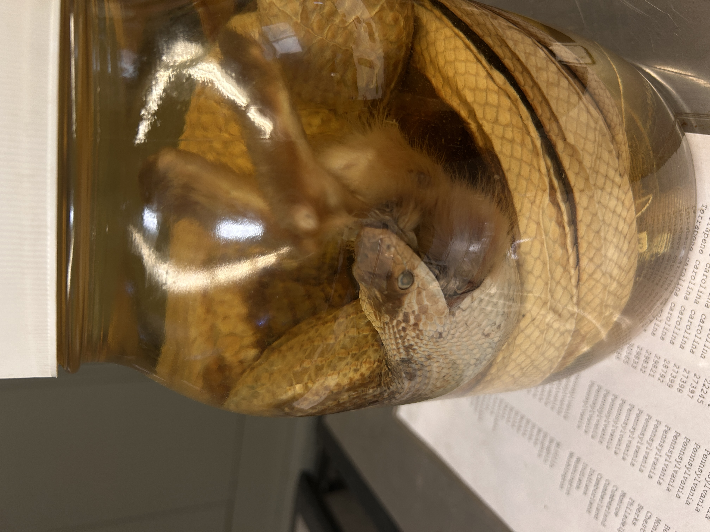
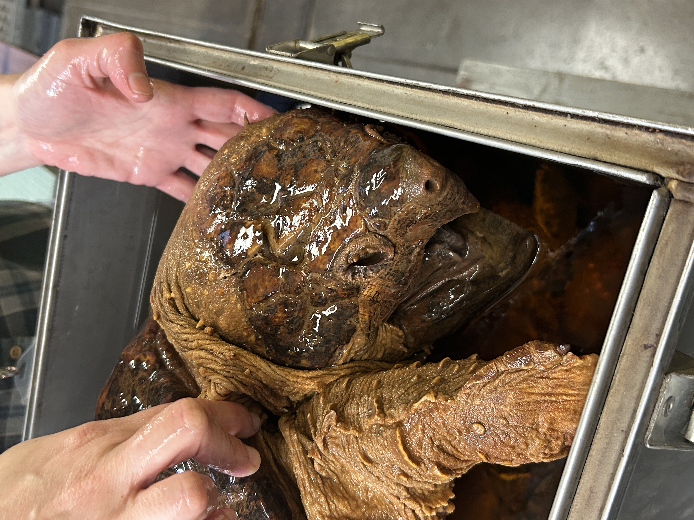
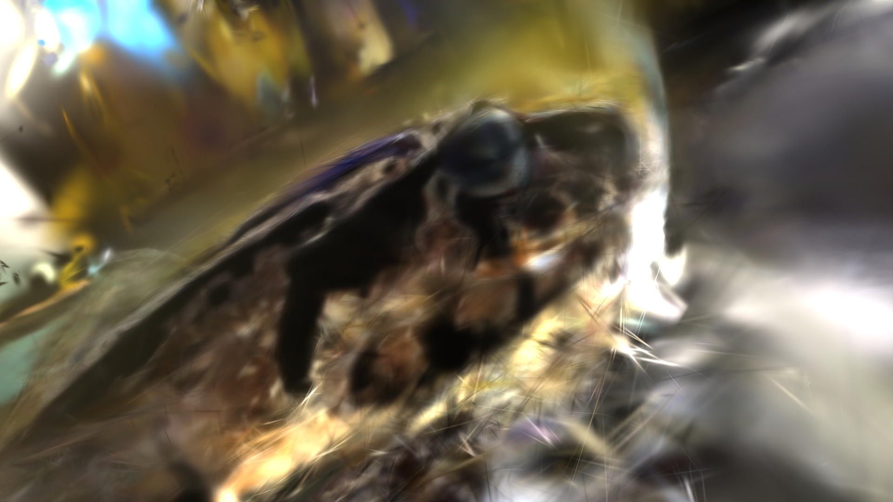
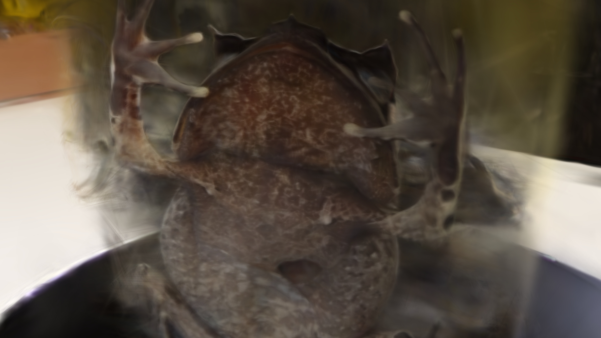
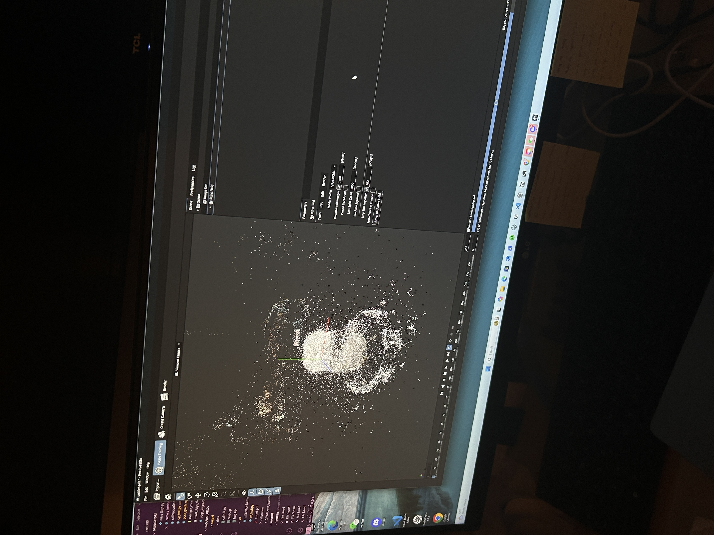
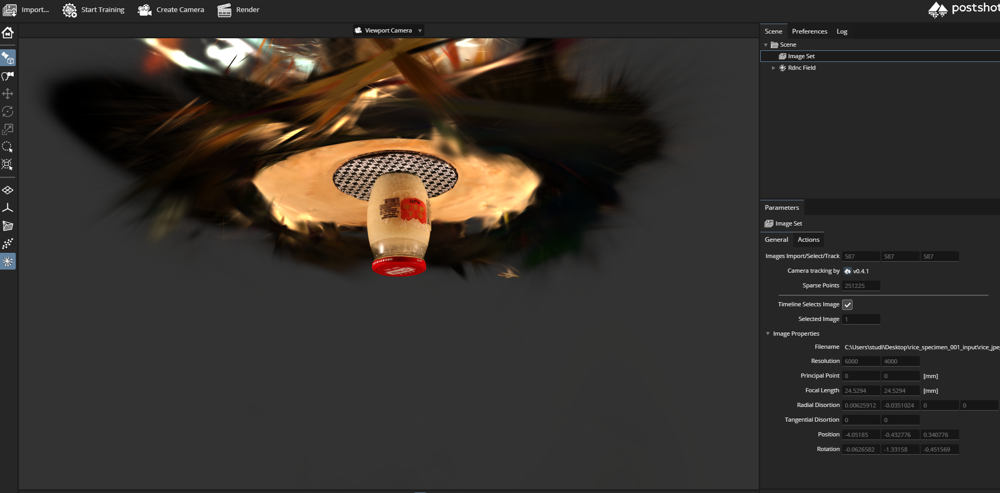
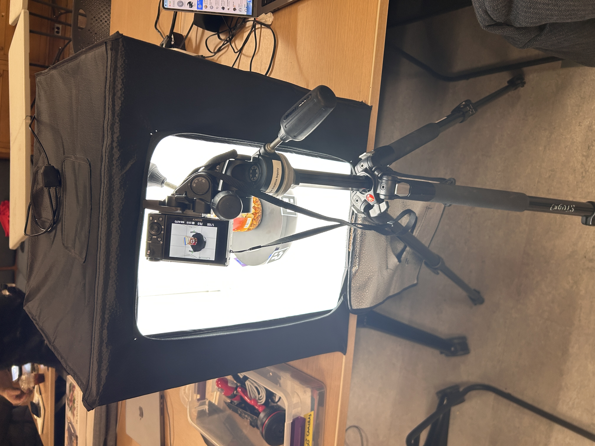

Traditional photogrammetry fails on glass and liquid. The reflective and translucent surfaces that make wet specimens so visually compelling produce garbage point clouds — scattered geometry, missing detail, surfaces that aren't there. I started this project to figure out what it would actually take to digitally preserve natural history collections housed in ethanol.
The answer turned out to be 3D Gaussian Splatting. Unlike NeRFs, which bake scene appearance into a neural network, 3DGS represents a scene as oriented Gaussian "blobs," each with its own opacity and color. It's unusually good at shiny, transparent, complicated scenes — exactly the conditions inside a specimen jar.
I worked with collections at the Carnegie Museum of Natural History and the Center for PostNatural History, capturing specimens with Polycam and processing them through both commercial (Postshot) and open-source (nerfstudio, COLMAP) pipelines. The project is ongoing: the goal is a workflow robust enough to hand off to collection stewards who don't want to think about Gaussians.
- with
- Golan Levin, Nica Ross, Rich Pell, Mariana Marques, Leo Lin, Oscar Dadfar, Jose Gomes
- partners
- Center for PostNatural History, Carnegie Museum of Natural History
- supported by
- FRFF Microgrant, BXA Small Grants
- links
- substack writeup →







